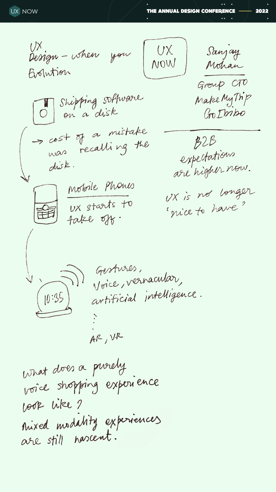
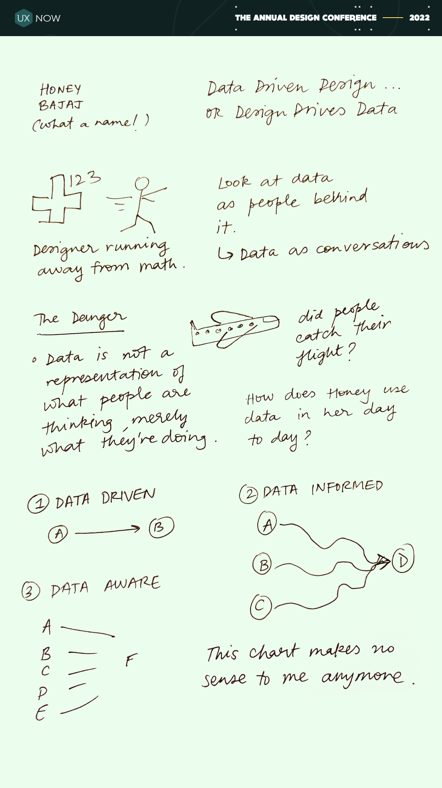
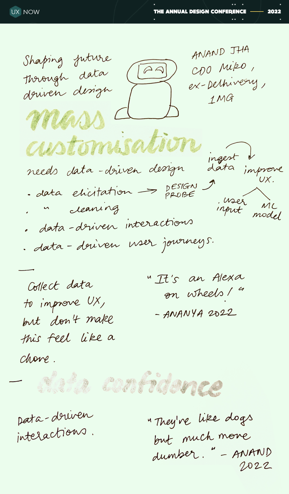
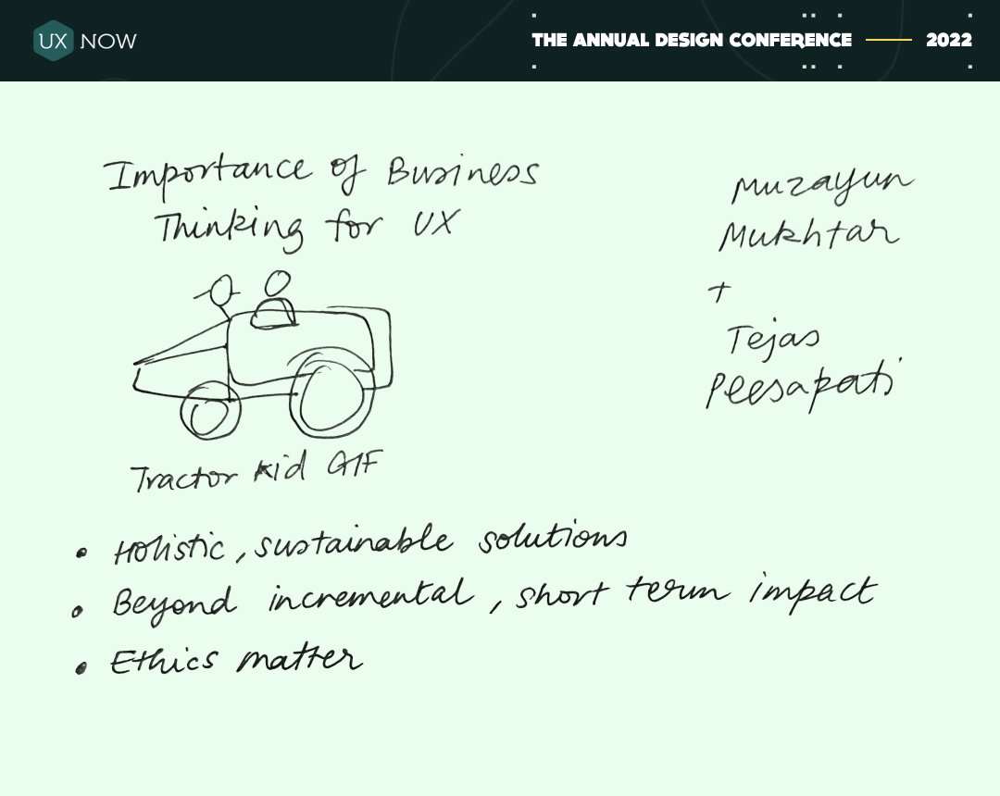
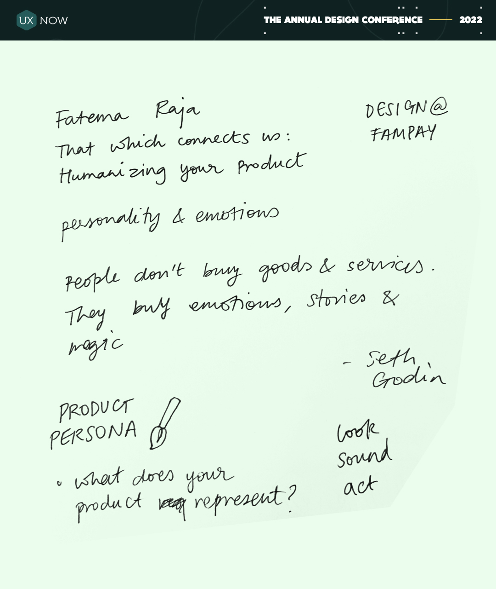
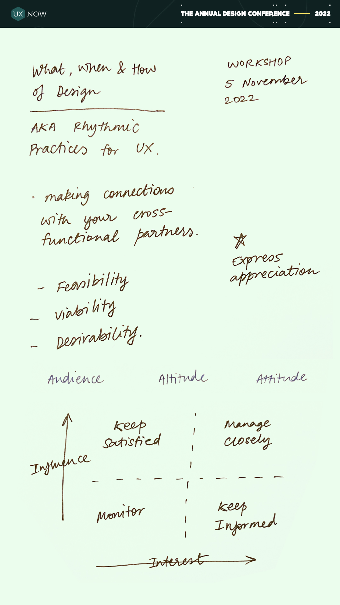
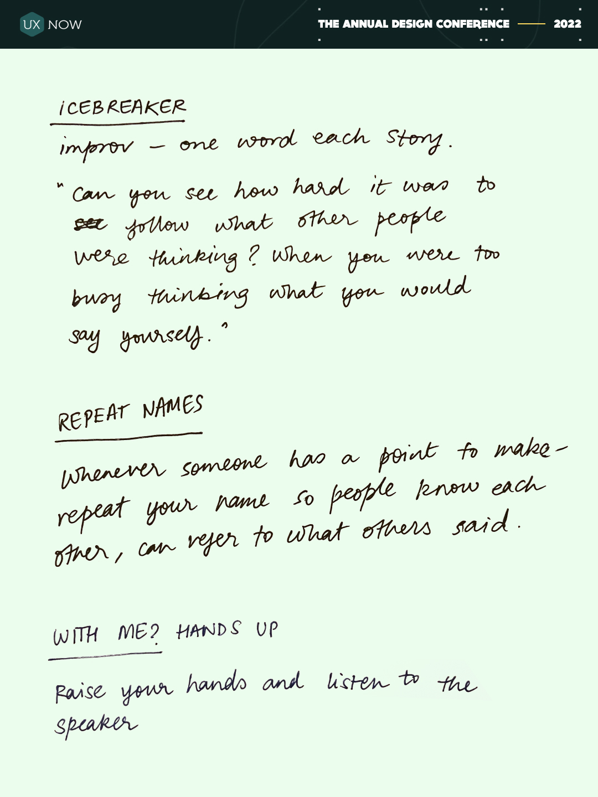
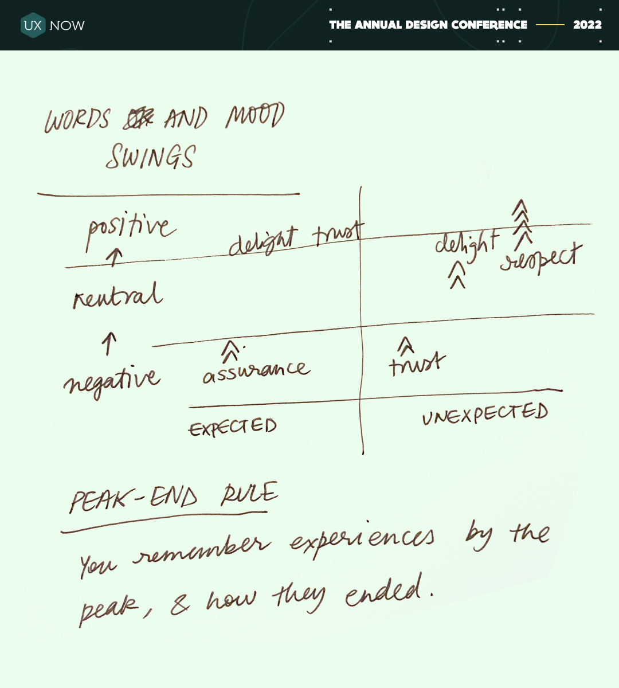

Notes from UxNow 2022
These are some notes and doodles from some of the talks at UxNow 2022, a UX design conference held at the India Habitat Center in New Delhi from 4-5 November 2022. These are mostly for myself, and may make only limited sense for anyone else.

Evolution of UX
Sanjay Mohan, Group Chief Technology Officer, MakeMyTrip & Goibibo

Data Driven Design or Design Drives Data
Honey Bajaj, Co Founder & CDO, The First Parents, ex - Tata Group

Shaping Future through Data Driven Design
Anand Jha, Chief Design Officer Miko, ex - Delhivery, 1MG

Importance of business perspective in UX
Muzayun Mukhtar + Tejas Peesapati, UX Research Managers, Next Billion Users, Google

That Which Connects Us; Humanizing Your Product
Fatema Raja, Design at FamPay, ex - Gojek

Workshop: Rhythmic Practices for UX
Muzayun Mukhtar + Honey Bajaj

Some interesting workshop practices
Muzayun Mukhtar

Words and Mood Swings
Madhumay Sinha, Content Design Manager, Gojek
That's all, folks!
My name is Gyan, and I am a multidisciplinary designer. You can see more of my work here.